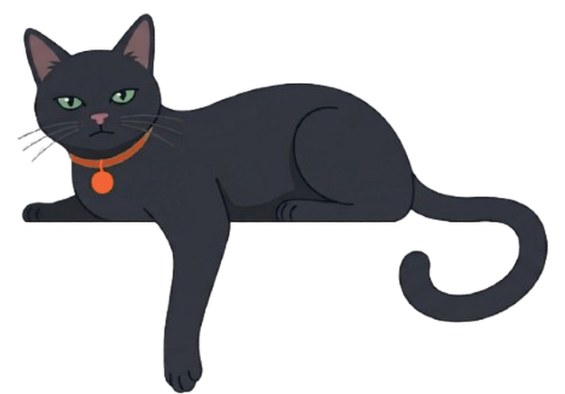

Loading⋯
— · — · —
오늘의 명대사
지난 기록

수집한 대본
search
Loading⋯
bookmark_border
아직 수집한 대본이 없습니다.
오늘의 명대사를 북마크하면 여기에 모입니다.
search_off
검색 결과가 없습니다
다른 단어로 시도해보세요
피드
매일 한 문장, 그리고 기억에 남은 장면들
auto_awesome
아직 하이라이트가 없어요
명대사 본문을 길게 눌러 한 구절을 하이라이트해보세요.
공지사항
업데이트와 소식
campaign
아직 공지가 없어요
새로운 소식이 올라오면 여기에 표시됩니다.
Anonymous
매일 한 장의 명대사로 하루를 시작합니다.
ACCOUNT
아이디와 비밀번호로 로그인하면 다른 기기에서도 북마크가 동기화됩니다.
가입 시 현재 익명 북마크는 자동으로 새 계정에 옮겨집니다.
내 활동
일반 설정
푸시 알림
데일리 다이제스트와 주요 소식
테마 설정
라이트 · 크림 페이퍼
맞춤 추천
북마크와 비슷한 카드를 추천합니다
약관 및 정보
앱 사용법
arrow_forward_ios이용약관
arrow_forward_ios개인정보 처리방침
arrow_forward_ios버전 정보
V1.0.0